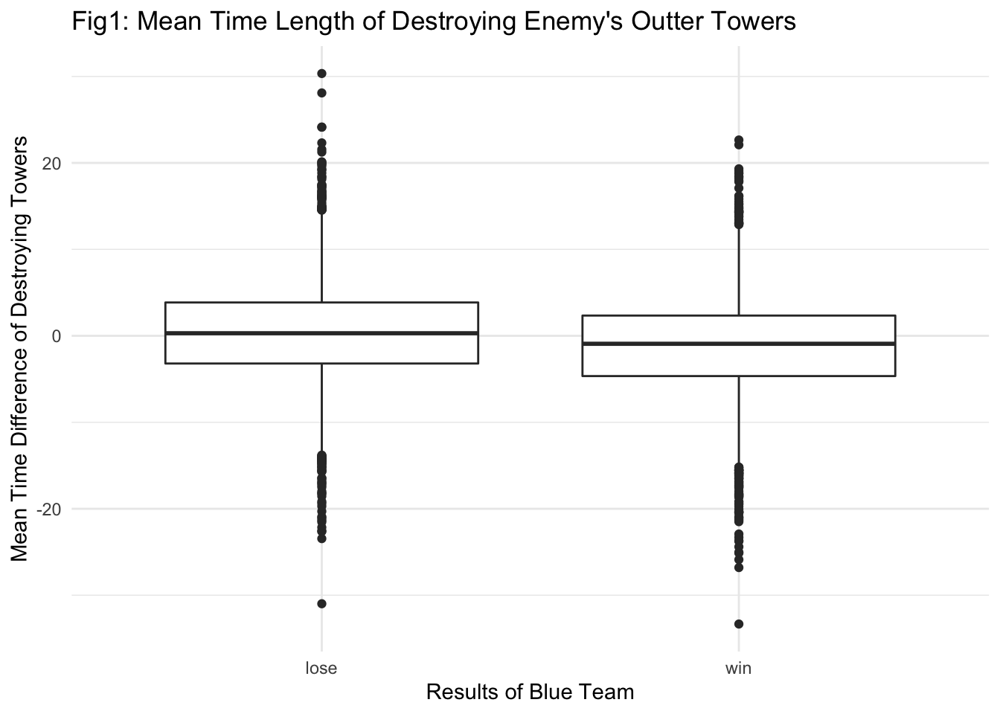
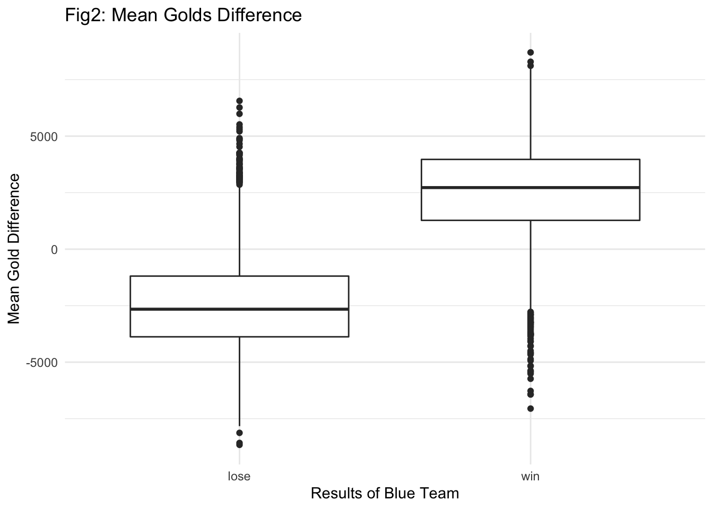
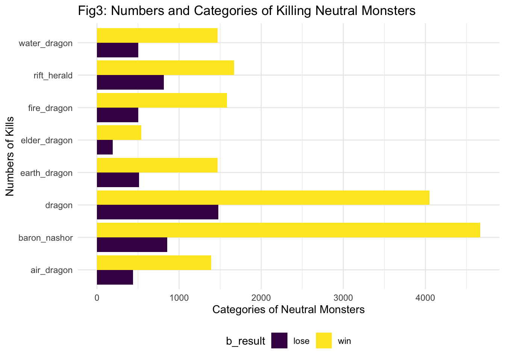
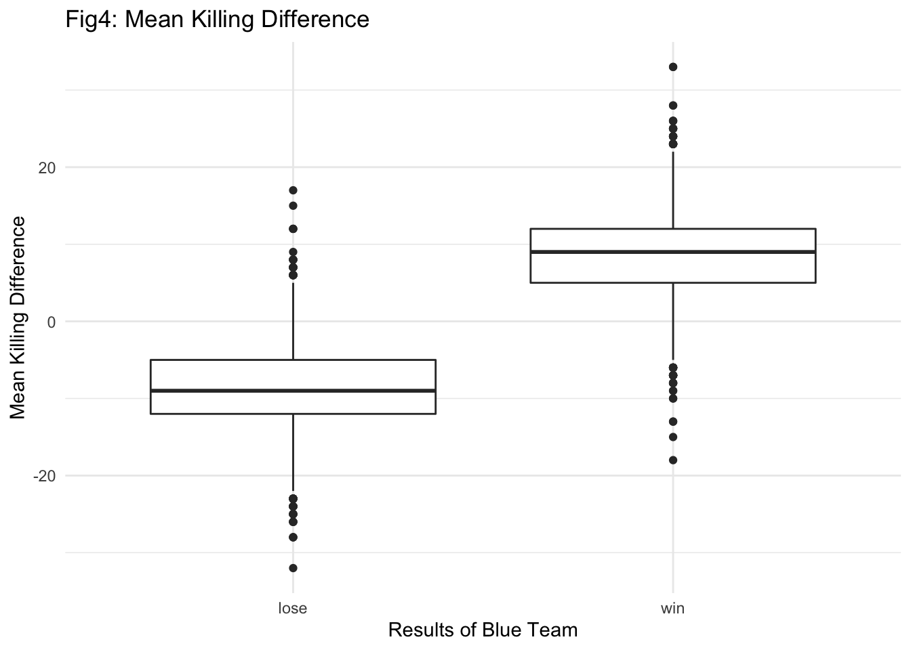

League of Legends (LoL) is an immensely popular multiplayer online battle arena game, with over 100 million monthly active users worldwide. It hosts progressional competitions throughout the year and had 43 million viewers in the 2016 World Championships alone. For context, that’s more than the 30.8 million viewers that watched Game 7 of the 2016 NBA finals! Published by Riot Games, LOL is clearly fun and addictive once you get started. For those who haven’t, here’s a quick overview.
10 players are divided into 2 teams (either blue or red) in the main LoL game (there are 3 modes). Before the battle begins, each player is going to declare the character, also known as champion, he/she intended to use and role-play it for the resting game. The objective for each team is to destroy the opposing team’s “Nexus”. Think of the Nexus as the main building in a base camp. Destroy the enemy Nexus and your team wins the game. Protect yours or your team loses the game. Simple enough. However, the collaboration often required between teammates to advance on the enemy Nexus, while defending its own, is wonderfully complex.
All of our team members love League of Legends so much and this game has become an integral part of our lives. We really enjoy winning the game, though we do not always win. So we are very curious about the deteminants of winning the game, other than unmeasurable data such as personal skills and team cooperation. For this project, we focus on analyze game results of the blue team (winning on the blue team implies losing on the red team. So analyzing one team is enough).
Does picking strong champions help blue team to win the game?
Does “Pick and Ban(P&B)” affect the result of the game? Are those champions with high win rates always being banned?
Does gold difference affect blue team’s result of the game? If it does, on what scale does it affect the result?
Does kill affect blue team’s result of the game? If so, how does it affect the result?
Does take down towers faster help blue team to win the game?
Does slaying netural mosters help blue team to win the game? If so, on what scale does it help to win the game?
We used League of Legends competitive matches dataset to obtain matches data between 2015 to 2018 from kaggle, a data modeling and data analysis competition platform. The complete dataset consists of eight different csv files, and each csv file contains different types of data (_columns.csv, bans.csv, gold.csv, kills.csv, matchinfo.csv, monsters.csv, structures.csv, leagueoflegends.csv).
We first glance at the content of each file. Then we filter out the useful data for processing. Turns out, there are five factors that we cared about the most — kills, towers, monsters, champions and golds.
Click to see the complete tidy procedures
kills = read_csv("./data/kills.csv") %>%
janitor::clean_names() %>%
mutate(address = str_remove(address,"http://matchhistory.na.leagueoflegends.com/en/#match-details/TRLH1/")) %>%
group_by(address, team) %>%
summarise(number = n()) %>%
pivot_wider(
names_from = "team",
values_from = "number") %>%
mutate(diff = bKills - rKills)kills.csv file. This file captures the information about unique match id, team id, kill numbers and the time in the game for each kill.Click to see the complete tidy procedures
tower =
read_csv(file = "./data/structures.csv") %>%
janitor::clean_names() %>%
filter(type == "OUTER_TURRET") %>%
mutate(
address = str_remove(address, "http://matchhistory.na.leagueoflegends.com/en/#match-details/TRLH1/")
)
tower =
tower %>%
group_by(address, team) %>%
mutate(
outer_tower = mean(time, na.rm = TRUE)
) %>%
select(-lane, -time, -type) %>%
distinct() %>%
pivot_wider(
names_from = team,
values_from = outer_tower
) %>%
mutate(outer_mean_diff = bTowers - rTowers)_columns.csv file. This file captures the information about unique match id, team id, tower id and the time in the game for each tower being taken down.Click to see the complete tidy procedures
monster =
read_csv("./data/monsters.csv") %>%
janitor::clean_names() %>%
mutate(
address = str_remove(address, "http://matchhistory.na.leagueoflegends.com/en/#match-details/TRLH1/")
)
monster =
monster %>%
filter(team %in% c("bDragons", "bBarons", "bHeralds")) %>%
group_by(address, type) %>%
summarise(number = n()) %>%
pivot_wider(
names_from = type,
values_from = number
)
monster[is.na(monster)] = 0monsters.csv file. This file captures the information about unique match id, team id, monster id, and the number of each monster being slayed. We first imported the monster.csv into R and took a brief look at the data structure and variables using summary() and str() functions. Then, we filtered the data to obtain data only for blue team. After that, we grouped by the unique match id and monster types to summarize for the total number of each type of monsters being slayed for each game. In order to turn each type of monsters into separate variables, we pivoted the data from “long” to “wide”. For those monsters that were not slayed in a game, the data cell that shows the number of slaying is presented by missing value. So, we manually turned these missing values into 0 indicating the certain type of monster has never being killed in a game. Since, for some types of monsters, the more times the monsters being slayed the more benefits will be brought to the team, we decided to treat the monster vairables to be continuous(number being slayed in a game) rather than categorize them(1 if being slayed in a game at least one time, 0 if never being slayed).Click to see the complete tidy procedures
gold =
read_csv(file = "./data/gold.csv") %>%
janitor::clean_names() %>%
filter(type == "golddiff") %>%
mutate(
address = str_remove(address, "http://matchhistory.na.leagueoflegends.com/en/#match-details/TRLH1/")
) %>%
pivot_longer(
min_1:min_95,
names_to = "min",
names_prefix = "min_",
values_to = "gold"
) %>%
drop_na()
gold_ave =
gold %>%
group_by(address) %>%
summarise(
golddiff_mean = mean(gold)
)monsters.csv file. This file captures the information about unique match id, team id, and golds quantity that each team has earned at every minute of a single game.bans.csv file. This file captures the information about unique match id, team id, and the champions being picked and banned of a single game.Click to see the complete tidy procedures
leagueoflegends =
read_csv(file = "./data/LeagueofLegends.csv") %>%
janitor::clean_names() %>%
mutate(address = str_remove(address, "http://matchhistory.na.leagueoflegends.com/en/#match-details/TRLH1/")) %>%
select(address, year, b_result)
merge_file =
left_join(leagueoflegends, tower, by = "address") %>%
mutate(b_result = recode_factor(b_result, "1" = "win", "0" = "lose"))
merge_file = left_join(merge_file, monster, by = "address")
merge_file = left_join(merge_file, gold_ave, by = "address")
merge_file <- left_join(merge_file,kills,by = "address")
## relevel b_results
merge_file <- merge_file %>%
mutate(b_result = relevel(b_result,"lose"))After all the separate datasets were tidied, we combined them into a single integarting dataset called merge_file by left joining all the datasets by unique match id. This final dataset was used for most our later exploratory analyses and statistical analyses.
First, we wanted to see whether take down towers faster help blue team to win the game. The way to win the League of Legends game is to destroy the opponent’s “Nexus base”. However, before reaching the “Nexus base”, your team should take down towers in order to reveal the “Nexus base”. “Nexus base” cannot be attacked before some of the towers have fallen. Also, destroying the tower can bring more money and map control to your side, which is crucial to the win. Hence, We want to know if destroying the towers in a shorter period of time will bring victory to the blue team.
merge_file %>%
ggplot(aes(x = b_result, y = outer_mean_diff)) +
geom_boxplot() +
labs(
title = "Fig1: Mean Time Length of Destroying Enemy's Outter Towers",
x = "Results of Blue Team",
y = "Mean Time Difference of Destroying Towers"
)
In Fig 1,variable outer_mean_diff represents the difference of average time destroying the enemy’s three outer towers between blue and red team (i.e. outer_mean_diff = average time blue team used - average time red team used). And vairable b_result, encoded as win versus lose, represents the battle results of the blue team. From the boxplot above, we expect that the blue team has a greater chance to win the game when the difference is negative, meaning the blue team takes less average time to destory the red team’s outer towers.
Next, we wanted to see if gold difference affect blue team’s result of the game. Gold is the name of money in the game. It enables players to buy powerful equipments for champions they controlled. There are many ways to earn Glod in the game, such as the ones mentioned above: killing, taking down towers and killing netural monsters. A gold lead will give your team a huge game advantage, which will drive your team to victory.
merge_file %>%
ggplot(aes(x = b_result, y = golddiff_mean)) +
geom_boxplot() +
labs(
title = "Fig2: Mean Golds Difference",
x = "Results of Blue Team",
y = "Mean Gold Difference"
)
In Fig 2, variable golddiff_mean represents the average monetary difference in every minute during the game between blue and red team (blue-red). From the boxplot, we expect that the blue team has a greater chance to win when the team has more golds than red team in average.
Next, we wanted to see if slaying netural mosters help blue team to win the game. There are many neutral monsters in the game map. After killing certain monsters, you will get both monetary rewards and additional special effect gains, called buff in the game. Dragon (with 5 different types), Rift Herald and Baron Nashor are the three of the most important monsters.
merge_file %>%
janitor::clean_names() %>%
pivot_longer(
baron_nashor:fire_dragon,
names_to = "neutral_monster",
values_to = "number"
) %>%
group_by(b_result, neutral_monster) %>%
summarise(number = sum(number, na.rm = TRUE)) %>%
ggplot(aes(x = neutral_monster, y = number, fill = b_result)) +
geom_bar(stat = "identity", position = position_dodge()) +
coord_flip() +
labs(
title = "Fig3: Numbers and Categories of Killing Neutral Monsters",
x = "Numbers of Kills",
y = "Categories of Neutral Monsters"
)
In Fig 3, we try to explore which neutral monsters have a higher effects in contributing to the battle results. The largest difference exists in the kills of Baron Nashor.
Lastly, we wanted to know whether kill affect blue team’s result of the game. Kill is a very important player behavior in League of Legends games. To be more specific, the killing can be interpreted as your controlled player, called champion in this game, kills enemy’s champion or is killed by enemy’s. It just like the Pokémon you used in the Pokémon game, which is defeated by the opponent’s Pokémon. Killing has a huge potential impact on the progress of the game. On the one hand, killing behavior will bring money to your team, so that you have more money to buy powerful equipments to make your champions stronger. On the other hand, killed enemy’s champions will enter resurrection time and they will not be able to act during resurrection time.
merge_file %>%
ggplot((aes(x = b_result,y = diff,group = b_result))) +
geom_boxplot() +
labs(
title = "Fig4: Mean Killing Difference",
x = "Results of Blue Team",
y = "Mean Killing Difference"
)
In Fig 4,variable diff represents the average kill difference in every minute during the game between blue and red team (blue-red). From the boxplot, we expect that the blue team has a greater chance to win when the team has more kills than red team in average.
需要展示shiny和dashboard
We used logistic regression model to predict the log odds of win of blue team by including covariates that entailed the data for kill, towers, monsters and golds. At first, we used the original mean gold difference data value to perform the logistic model. Nontheless, mean gold differences are usually very large for most of the games like 10 thousands or even 20 thousands golds. On that account, each 1 unit of gold difference would barely contribute to predict the log odds of win and the parameter estimate of variable gold difference is very low, though significant. Thus, we further decided to divided the gold difference data by 100 to make it a 100-unit increment.
merge_file =
merge_file %>%
mutate(
b_result = recode_factor(b_result, "lose" = "0", "win" = "1"),
kill_diff = diff,
golddiff_mean = golddiff_mean/100
) %>%
select(-diff)mult_log = merge_file %>%
mutate(b_result = factor(b_result)) %>%
glm(formula = b_result ~ outer_mean_diff + golddiff_mean + BARON_NASHOR + DRAGON + RIFT_HERALD + AIR_DRAGON + EARTH_DRAGON + ELDER_DRAGON + WATER_DRAGON + FIRE_DRAGON + kill_diff, family = "binomial")
mult_log %>%
broom::tidy() %>%
knitr::kable(digits = 3)| term | estimate | std.error | statistic | p.value |
|---|---|---|---|---|
| (Intercept) | -1.427 | 0.160 | -8.907 | 0.000 |
| outer_mean_diff | 0.015 | 0.012 | 1.291 | 0.197 |
| golddiff_mean | 0.009 | 0.004 | 2.143 | 0.032 |
| BARON_NASHOR | 1.017 | 0.091 | 11.226 | 0.000 |
| DRAGON | 0.331 | 0.059 | 5.571 | 0.000 |
| RIFT_HERALD | -0.022 | 0.115 | -0.187 | 0.852 |
| AIR_DRAGON | 0.579 | 0.132 | 4.394 | 0.000 |
| EARTH_DRAGON | 0.201 | 0.112 | 1.788 | 0.074 |
| ELDER_DRAGON | 0.133 | 0.145 | 0.916 | 0.359 |
| WATER_DRAGON | 0.267 | 0.113 | 2.364 | 0.018 |
| FIRE_DRAGON | 0.445 | 0.116 | 3.843 | 0.000 |
| kill_diff | 0.459 | 0.017 | 27.664 | 0.000 |
From the model we saw that gold lead for blue team did help them to win the game. For each 100 golds lead, the log odds of blue team winning the game increases by 0.9%. If the blue team has gold lead by 10 thousands golds, the log odds of winning will increase by 90%!
Also, slaying monsters help blue team to win the game in a large extent. The most prominent effect is slaying Baron Nashor which is the thoughest monster in the game. As long as 1 Baron Nashor is slayed by blue team, the log odds of winning will be doubled!
Moreover, kills contributes to the victory of blue team a lot. During a game, if the total kills number of blue team is greater than that of the red team for merely 1, the log odds of winning of blue team increases by 45.9%. Hence, kills more champions than does the opponent team helps to win the game in general.
However, the result shown by the outer_mean_diff variable, which represents the mean time difference in minute of destroying all the outer towers between blue team and red team, did not come out as we expected. From the exploratory analysis, we saw that the if the blue team destroys the outer towers faster than red team, they had a higher chance to win. Note that faster means the time difference between blue team destroying the outer towers and red team destroying the outer towers should be a negative value. Nonetheless, the positive parameter estimate from the model tells that if blue team is faster(with negative time difference), the log odds of blue team winning the game will decrease. Needless to say that this variable is statistically non-significant in the model. Therefore, we want to further investigate the relationship between towers and the game result of blue team.
We first fitted a univariate logistic model with only outer_mean_diff as predictor.
tow_log = merge_file %>%
mutate(b_result = factor(b_result)) %>%
glm(formula = b_result ~ outer_mean_diff, family = "binomial")
tow_log %>%
broom::tidy() %>%
knitr::kable(digits = 3)| term | estimate | std.error | statistic | p.value |
|---|---|---|---|---|
| (Intercept) | 0.107 | 0.024 | 4.369 | 0 |
| outer_mean_diff | -0.048 | 0.004 | -11.472 | 0 |
The negative parameter estimate is consistent with our exploratory analysis that if the blue team destroys the outer towers faster than red team, they had a higher chance to win.
tow_gold_log = merge_file %>%
mutate(b_result = factor(b_result)) %>%
glm(formula = b_result ~ outer_mean_diff + golddiff_mean, family = "binomial")
tow_gold_log %>%
broom::tidy() %>%
knitr::kable(digits = 3)| term | estimate | std.error | statistic | p.value |
|---|---|---|---|---|
| (Intercept) | 0.187 | 0.040 | 4.696 | 0 |
| outer_mean_diff | 0.150 | 0.008 | 19.878 | 0 |
| golddiff_mean | 0.112 | 0.003 | 43.023 | 0 |
However, when we built another model with covariates outer_mean_diff and golddiff_mean, the sign of parameter estimate of outer_mean_diff flipped to be positive which was the same as our first full model that contains all variables. Hence, we thought that the true effect of destroying outer towers on the result of the game in fact comes from the golds that blue team earns by destroying the outer towers. This is to say that the behavior of destroying the outer towers faster doesn’t directly increase the odds of winning the game, but the golds earned by destroying the outer towers lead blue team to have a higher chance to win.
Based on our experience with League of Legends, most of the things that a player has done in a game are related to golds. For example, kills will earn golds, taking down towers will earn golds, and making good use of the boosting effect gained by slaying monsters can also help to earn golds. This means that the four predictors may be correlated. Therefore, we set to test for correlation between the four variables we chose. (Note we only preserved monsters variables for those with large effect size in our full model, i.e beta > 0.4)
my_data =
merge_file %>%
filter(year != 2014) %>%
#select(-address, -year, -b_result, -bKills, -rKills, -bTowers, -rTowers) %>% #
select(outer_mean_diff, golddiff_mean, kill_diff, BARON_NASHOR, AIR_DRAGON, FIRE_DRAGON) %>%
rename(
tower = "outer_mean_diff",
gold = "golddiff_mean",
kill = "kill_diff",
nashor = "BARON_NASHOR",
air = "AIR_DRAGON",
fire = "FIRE_DRAGON"
) %>%
drop_na()
res <- cor(my_data)
round(res, 3) %>%
knitr::kable()| tower | gold | kill | nashor | air | fire | |
|---|---|---|---|---|---|---|
| tower | 1.000 | -0.374 | -0.105 | -0.040 | -0.083 | -0.024 |
| gold | -0.374 | 1.000 | 0.789 | 0.454 | 0.155 | 0.117 |
| kill | -0.105 | 0.789 | 1.000 | 0.427 | 0.104 | 0.134 |
| nashor | -0.040 | 0.454 | 0.427 | 1.000 | 0.116 | 0.079 |
| air | -0.083 | 0.155 | 0.104 | 0.116 | 1.000 | 0.043 |
| fire | -0.024 | 0.117 | 0.134 | 0.079 | 0.043 | 1.000 |
We saw that the correaltion between golds and kills was 0.789. This correlation value was very high in respective to other variables. The finding convinced us that a large part of effect from variable kill_diff can in fact be explained by the effect from golddiff_mean. On this account, we suspected that the effect of other variables on the blue team’s result of a game might be modified by the effect of gold difference. So we tried adding interaction terms into our full model. Specifically, we made golddiff_mean to interact with only kill_diff and all the monsters variable Baron_Nashor. The reason we did so was that these two variables had the largest effect size and were significant under the full model.
final_log = merge_file %>%
mutate(b_result = factor(b_result)) %>%
glm(formula = b_result ~ golddiff_mean + BARON_NASHOR + kill_diff + DRAGON + AIR_DRAGON + EARTH_DRAGON + WATER_DRAGON + FIRE_DRAGON +golddiff_mean:BARON_NASHOR + golddiff_mean:kill_diff, family = "binomial")
final_log %>%
broom::tidy() %>%
knitr::kable(digits = 3)| term | estimate | std.error | statistic | p.value |
|---|---|---|---|---|
| (Intercept) | -1.465 | 0.154 | -9.522 | 0.000 |
| golddiff_mean | 0.021 | 0.005 | 4.327 | 0.000 |
| BARON_NASHOR | 1.117 | 0.087 | 12.802 | 0.000 |
| kill_diff | 0.457 | 0.016 | 28.227 | 0.000 |
| DRAGON | 0.305 | 0.059 | 5.215 | 0.000 |
| AIR_DRAGON | 0.610 | 0.130 | 4.676 | 0.000 |
| EARTH_DRAGON | 0.214 | 0.112 | 1.911 | 0.056 |
| WATER_DRAGON | 0.252 | 0.113 | 2.233 | 0.026 |
| FIRE_DRAGON | 0.420 | 0.116 | 3.612 | 0.000 |
| golddiff_mean:BARON_NASHOR | -0.015 | 0.004 | -4.069 | 0.000 |
| golddiff_mean:kill_diff | 0.001 | 0.001 | 2.106 | 0.035 |
Amongst two of the interaction terms, the interaction bewteen golddiff_mean and BARON_NASHOR was significant while the interaction bewteen gloddiff_mean and kill_diff was not. One thing needed to be noted here was that the coefficient of the interaction bewteen golddiff_mean and BARON_NASHOR was negative. This indicated that if blue team had both gold lead and had taken down baron nashor, the two things togther made the increament in the odds of winning by blue team less.
By using the League of Legends Competitive Matches data, we were able to simply inspect what factors might affect the result of a single League of Legends game and how did those factors act on influencing the result. By employing the exploratory data analysis as well as statistical analysis, we were able to state that more kills, taking down towers faster, slaying monsters and having more golds did raise the chance of winning for blue team, even though the predictor representing taking down twoers’ time was non-significant in our logistic model. But this could be explained from other perspective and we did suggested an alternative reason in the statistical analysis section. Furthermore, the correlation between covariates showed that all the variables were more or less related to golds. This makes sense since almost all the strategies and plays you make in the game are bound to help you gain more golds so that you can expand the lead for your team and win the game.
Nonetheless, there are some intrinsic problems in the data that we used. For example, most of the data consist with matches from master series(where professional players contest). All of the players are extremly skillful and adpot subtle statics. Hence, the data from these matches may look quite difference from the data from the normal matches for amateur players like us. Therefore, the external validity of the regression model inferred by the data will be hurted. The analyses we did may only be valid for analyzing professional matches. Also, the data do not include information about each champion’s individual value such as attack damage value, defense value and magic ability damage value. Thus, we were not able to make any inference about the affect of the champions being picked on the result of a game. For example, what if all the 5 champions chose by blue team have higher attack damage than that of the red team? We don’t know because we don’t have these data.
If we were to make further prediction for the result of a League of Legends game, we may need more information and we ought to take deeper investigation on the data.